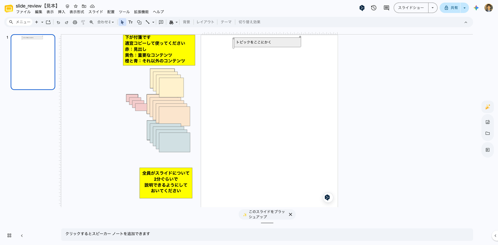
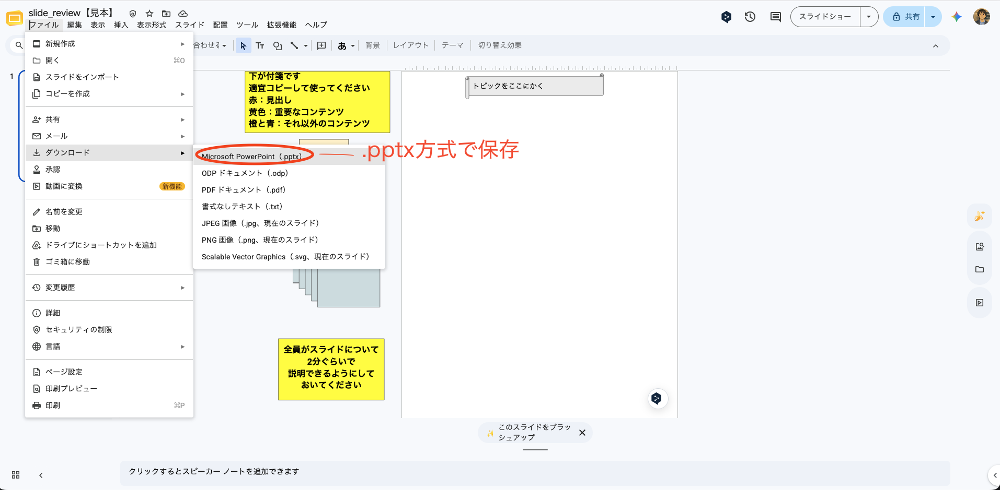
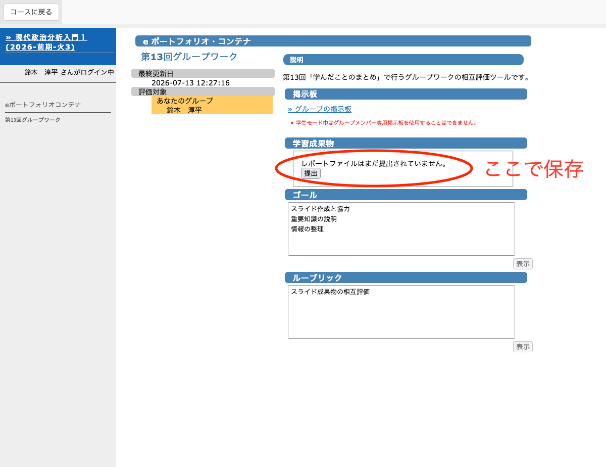
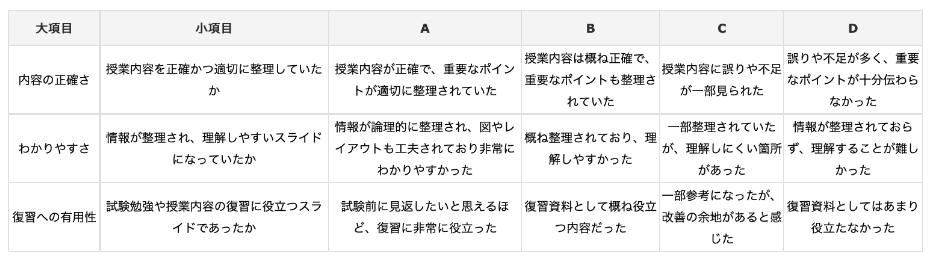
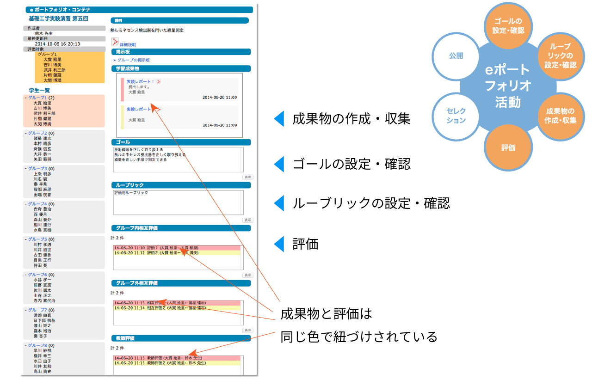

13/学んだことのまとめ
現代政治分析入門1
2026-07-14
出席登録をお願いします

今日の目次
- はじめに
- グループワーク
- ギャラリーウォーク
- まとめ
はじめに
本日の目的と到達目標
目的
グループワークによるスライド作成とギャラリーウォークを行い、授業で学んだことを思い出して整理し定着を図る。
到達目標
- 各回で学んだ重要だと思うことを自分の言葉で説明できる
- 周囲と協力しながら学習を深めることができる
- 情報をわかりやすく整理したスライドを作成できる
本日の授業の位置付け

グループワーク
目的と到達目標
目的
今まで学んだことを思い出して整理し定着を図る
到達目標
- 授業内容を思い出し、有益な知識やアイデアを共有できる
- 他のメンバーの意見を尊重しながら、議論を進められる
- ポスターの構成や編集など、成果物の作成に貢献できる
方法
スライド作成のGW＋ギャラリーウォーク
- 学んだことについてグループでテーマを分担し、スライドを作成
- 他のグループのスライドを見て復習
- グループ外相互評価：復習の役に立ったかを評価
作業はGoogleドライブの共有フォルダ上で行う
- KOMAnet Gmailアカウントでログインし、届いている招待メールからアクセスすること
- 組織外のアカウントではアクセスできません
テーマと担当グループ
テーマと担当グループは以下の通り
- テーマA：科学と説明①（グループA1〜A6）
- 02/説明とは何か、03/反証可能性
- テーマB：科学と説明②（グループB1〜B6）
- 04/説明と一般化、05/推論としての記述
- テーマC：因果関係①（グループC1〜C6）
- 06/共変関係、07/原因の時間的先行
- テーマD：因果関係②（グループD1〜D6）
- 08/変数の統制、09/単位／選択／観察
- テーマE：事例分析（グループE1〜E6）
- 10/比較事例分析、11/単一事例分析
グループ分け
グループ分け表を確認し、自分のテーマとグループを確認すること
- WebClassとGoogle Drive共有フォルダにグループ分けリストあり
- Google Driveのファイルをダウンロード→検索がよい
- 個人情報が含まれているので取扱注意
- WebClass「第13回グループワーク」（下の方）でも可能
- Google Driveのファイルをダウンロード→検索がよい
- 来週以降のレポート作成もこのグループで行います
グループワークの手順
- （グループ）軽く自己紹介（2分）
- 出席者の中であいうえお順1番目から
- 学年と名前だけでよい
- （個人）そのテーマについて最も学んだことを2つ以上思い出し、「ふせん」1枚に1つずつ書き出す（3分）
- （グループ）書き出したことを手がかりに、ふせんや各到達目標を参考に各テーマについてまとめたスライドを作成（20分）
- 役割：出席者の中であいうえお順1番目の人がふせん整理、2番目の人が司会
- ふせんやテキスト、囲み枠等を使いわかりやすく

スライドの保存と提出
- （個人）スライドをダウンロードして保存し提出（5分）
- スライドツールバー上のファイル＞ダウンロード＞Microsoft PowerPoint (.pptx)
- 出席者の中であいうえお順3番目の人が代表で行う
- WebClassの「第13回グループワーク」に「学習成果物」のところで提出
- グループメンバーなら誰でも、複数回提出できるがなるべく一回の提出にする


注意
- 作業時間の案内は教員が全体向けチャットで行います
- 作業が終わらなくても、教員の指示があったら次の活動へ移ってください。
- 各グループで欠席者がいても、2人以上出席していたらそのグループは成立したとみなします。
- 各グループに移動した後、5分経っても自分1人しかいない状況となった場合、ブレイクアウトルームを離れて教員のいる全体ルームに戻ってきてください。
- 人数を確認の上、同じテーマの別グループに案内します。
- 各グループに移動した後、5分経っても自分1人しかいない状況となった場合、ブレイクアウトルームを離れて教員のいる全体ルームに戻ってきてください。
- 教員は全体ルームにいるので問題発生時は戻ってきてください
作業開始
自分のブレイクアウトルーム・スライドに行ってください
- Google Meet→右下の会議ツールから、ブレイクアウトルーム
- 例：グループA1→ブレイクアウトA1
- Google Drive→グループに対応するスライド
- 例：グループA1→slide_review_A1
- 担当を確認・決定
- あいうえお順1番目→ふせん整理
- あいうえお順2番目→司会
- あいうえお順3番目→提出者
- 臨機応変に対応しても可能
ギャラリーウォーク
ギャラリーウォークの手順
- （個人）自分が担当しなかった4テーマそれぞれのスライドを1つずつ見る（合計4枚）
- 割り当て：同じ番号の別テーマのグループ
- A1⇄B1⇄C1⇄D1⇄E1
- A2⇄B2⇄C2⇄D2⇄E2
- …
- 割り当て：同じ番号の別テーマのグループ
- （個人）スライドを見たらグループ外相互評価（WebClass）
- 内容の正確さ、わかりやすさ、復習への有用性
- 対象外のグループは評価の必要なし
ルーブリック（採点基準）

相互評価

相互評価（20分）
- 割り当て：同じ番号の別テーマのグループ
- A1⇄B1⇄C1⇄D1⇄E1
- A2⇄B2⇄C2⇄D2⇄E2
- A3⇄B3⇄C3⇄D3⇄E3
- A4⇄B4⇄C4⇄D4⇄E4
- A5⇄B5⇄C5⇄D5⇄E5
- A6⇄B6⇄C6⇄D6⇄E6
- WebClass「第13回グループワーク」（下の方）を開いて作業
- 左の「学生一覧」から対象グループを選択
- 右の「グループ外相互評価」から課題を選択し採点
- 複数あったら最新版を対象とする
- Google Driveの方を見ても良い
まとめ
本日の目的と到達目標
目的
グループワークによるスライド作成とギャラリーウォークを行い、授業で学んだことを思い出して整理し定着を図る。
到達目標
- 各回で学んだ重要だと思うことを自分の言葉で説明できる
- 周囲と協力しながら学習を深めることができる
- 情報をわかりやすく整理したスライドを作成できる
次回までに
事後学習
- 改めて授業資料を全体的に見直す
事前学習
- 政治現象や社会現象について、自分が検証したい仮説を2〜3個書き留めておく。
来週以降の予告
来週（7/20）も本日と同様オンライン開催
- 本日と同じグループでレポート作成準備
- 政治現象をめぐる仮説構築とその検証方法の計画
再来週は課題授業とし、リアルタイム授業はなし
- レポートの完成・提出とグループ間相互採点

学んだことのまとめ